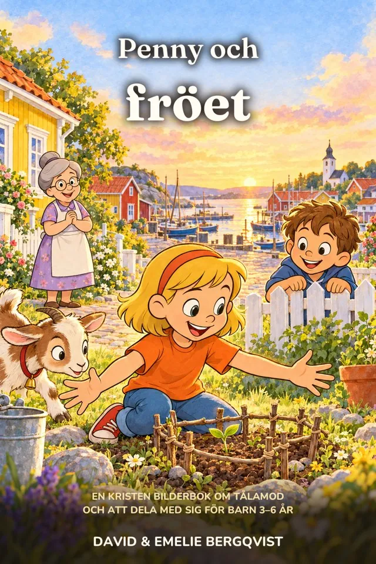

Innan Guldboken fanns ett frö. Lilla Pennys första bilderbok, om tålamod, att dela med sig och undret när något växer.

Femåriga Penny ska just kasta ett äppelfrö så långt hon kan, när mormor Maggan stoppar henne och håller upp fröet mot solen som om det vore en diamant. ”Hur många äpplen bor i det här fröet?”
Så Penny planterar det. Och väntar. Och väntar. Grannpojken Melker skrattar åt hennes lilla träd, geten Bettan äter upp det, och en vårnatt kommer frosten. Penny lär sig det som alla trädgårdsmästare vet: det bästa växer långsamt, och det växer bäst när man delar med sig.
En bilderbok med 16 uppslag och varma bilder i fyrfärg, gjord för att läsas högt om och om igen.
Det som är bra tar tid. Penny vattnar, väntar och skyddar sitt träd långt innan det ger något tillbaka.
Det första äpplet delas på trappan, och snart bär hela grannskapet korgar med äpplen.
Ett enda frö rymmer ett helt träd. Som senapskornet i Jesu liknelse, berättat för de minsta.
18 sidor att skriva ut för barn 6 till 10 år, så att samtalet kan börja vid köksbordet redan den här veckan.
3 till 6 år, som högläsning. Äldre syskon som känner Penny från kapitelböckerna tycker om att möta henne som femåring.
Bilderböckerna kommer efter de första kapitelböckerna. Anmäl dig till gratispaketet, så berättar vi samma dag som den kommer.
Paketet är gjort för barn 6 till 10 år, men många av målarbilderna fungerar för yngre barn också.